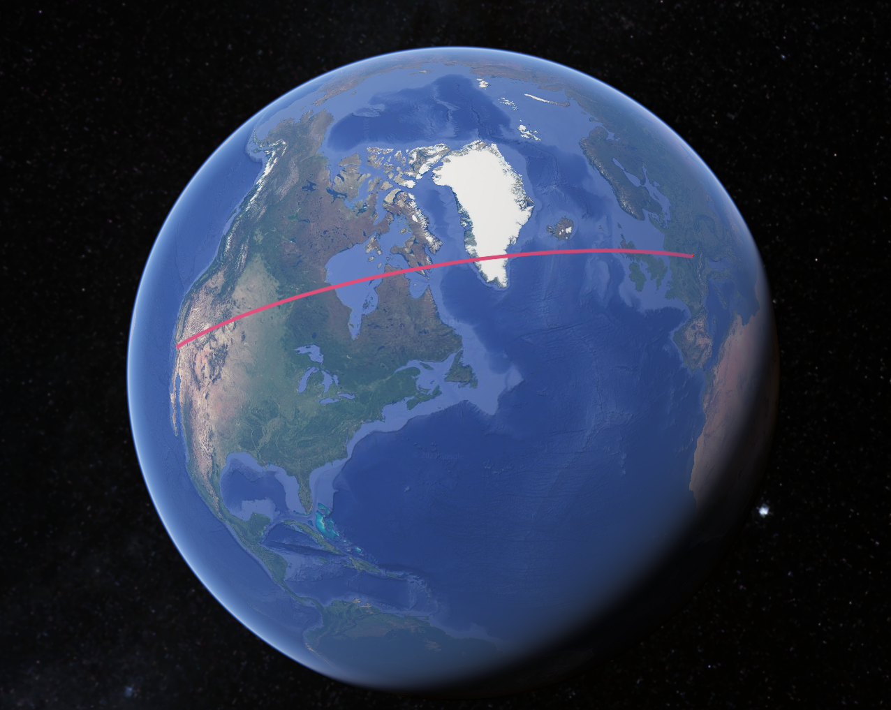
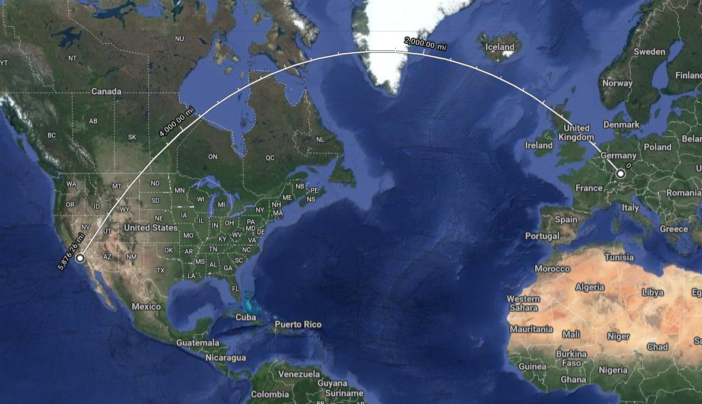

General Theory of Realtivity
The current description of gravitation in modern physics.
Instead of seeing gravity as an invisible force that attracts objects to one another, gravity is the curving of space. The more massive an object is, the more it warps space. But because space and time are connected, gravity can affect the passing of time. The general theory is built on "field equations," which describe the relationship between mass and the curvature of spacetime.
To get a better understanding of the curvature of space. We can think about two cities on earth with some distance between them; I will pick Los Angeles and Ulm (Einstein's birthplace). If we wanted to fly from one to the other, we would like the plane to take the shortest route. So that would be a straight line. Looking at a globe gives us a straight path. But when looking at a 2-dimensional flat map. It seems like the path is curved.
 These curved lines are called geodesics. They are straight paths on a curved surface.
This theory was proven during a solar eclipse in 1919 when the light from stars behind the sun was deflected because the mass of the sun curved spacetime. Another more recent proof was made during the discovery of gravitational waves in 2016.
An actual application for this theory in the real world is that GPS satellite networks consider gravity's effects to achieve accurate location.